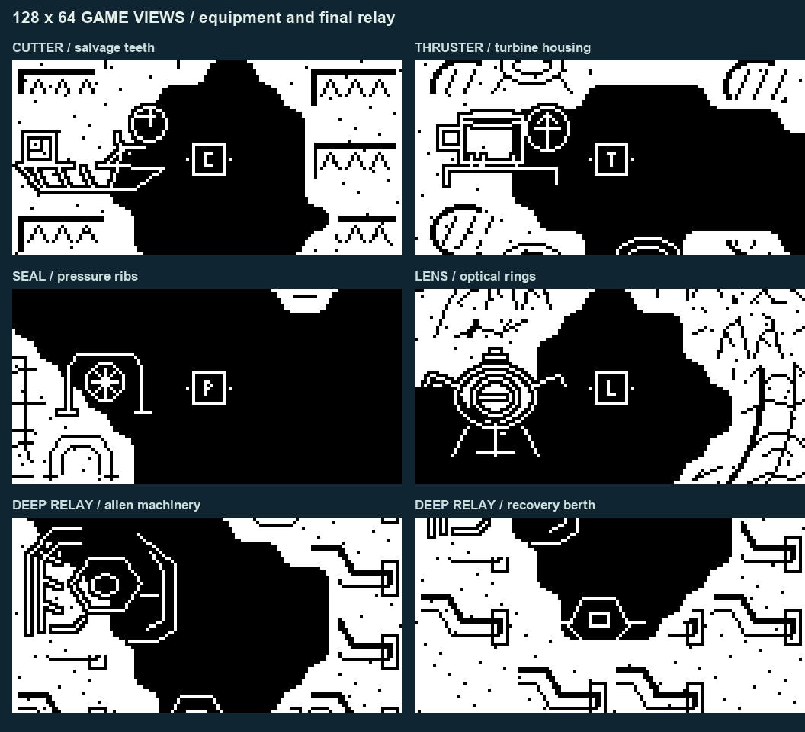
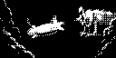
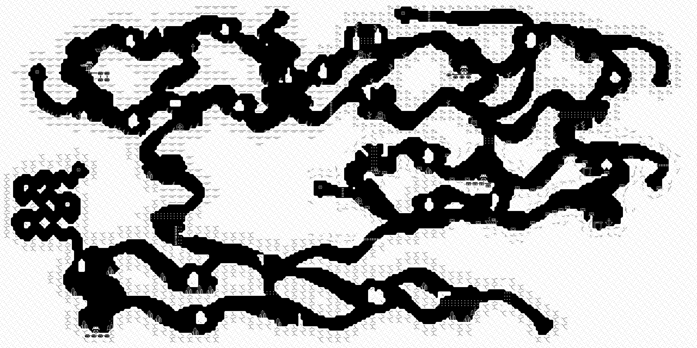

[01] QUICK START
- Switch on. The Snailware logo runs for about three seconds; any button skips it. The Sub-hauler title screen waits for a fresh press, so let go of the button first.
- At Tidewall, open WORK, pick FIRST and press A. The crates go aboard; you stay at the berth.
- Choose UNDOCK, or just press B. You have to clear the ring before the dock will grab you again.
- Take the chart to Benthos and ease into the ring below 16 px/s. The delivery is signed off as soon as you dock.
- The station clue and WORK board point to the next job. Tool locations and route hints are in the clue file at the back, behind spoiler tabs.
Nothing is on a clock. Berths refill the tank and save your voyage, so stop whenever you need to.
[02] CONTROLS / HANDLING
| Screen | Input | Action |
|---|---|---|
| Logo | Any press | Skip the three-second logo. The title screen still waits for a fresh press. |
| Title screen | Fresh press | Dismiss the splash. Let go of any held button first; that release is used up. |
| Title menu | Up / Down | Pick CONTINUE or NEW VOYAGE. |
| Title menu | A | Confirm. NEW VOYAGE asks before replacing a valid save. |
| Flight | Left / Right | Thrust. Reverse is half forward. Let go to coast down. |
| Flight | Up | Blow ballast to rise; spends air. |
| Flight | Down | Flood ballast to sink; no blow cost. |
| Flight | A | Hold with the thruster owned to double thrust both ways and the ballast valve rate. |
| Flight | B | Open the chart. B closes it. Travel, air and ballast pause. |
| Flight | A+B | Press together to pause. |
| Menus | Up / Down | Pick a row. |
| Menus | A | Confirm / accept. |
| WORK | B | Back to the station board. |
| Station | B | Undock. |
| Pause | Up / Down | RESUME / RESCUE / MUSIC. |
| Pause | A | Confirm the selected row. |
| Pause / prompt | B | Resume or cancel. |
- Let go of Up or Down and the ballast stays where it is. The notch on the gauge is level trim for your current load. Nudge toward it and give the boat a moment to settle.
- The tank holds 300 units. Cruising burns 0.4 units a second; blowing ballast burns another 4 units a second. Flooding costs nothing extra. Every berth fills the tank for free.
- A full hold makes her sluggish: slower acceleration, lower top speed, and a heavy feel on the ballast. The trim notch drops as cargo comes aboard, so re-trim after loading.
- Once you have the thruster, hold A to double thrust in either direction and double the ballast valve rate. A full boosted blow empties the ballast in half the time and spends about half the air. Before the thruster, A does nothing in flight.
- Rocky knocks throw up debris. A hard landing on the floor at 16 px/s or more also costs 5 air. Clipping a side, ceiling or gate costs nothing.
- The HUD shows air, ballast with a trim notch, and the C/P/T tool marks. The survey lens has no mark.
[03] JOBS / DOCKING
- The freight stops are Tidewall, Benthos, Cormorant and Deep Anchor.
- Dock by easing into a pier ring below 16 px/s. The tank fills and the boat trims to neutral.
- After undocking, the dock will not catch you again until you have left the ring. If a berth refuses you, back out clear and come in slower.
- WORK handles story deliveries and survey jobs only. There is no shop, no money and no job clock.
- You can carry one job at a time. Press A on a story row to load it; you stay at the berth. Survey rows open the chart instead of putting cargo aboard.
- Once accepted, story work cannot be dropped. It remains in the save until you deliver it.
- To pick up a tool or record a survey, come nearly to a stop beside it and wait. The boat does the rest; there is no action button.
- Repair cargo is handed over at the machine named in the job. A repaired work site may open as a service berth.
- You do not keep new tools, surveys or repairs until you dock and the save goes through.
[04] EQUIPMENT / CHART
Tools, survey rings and cutter grates all work the same way: come alongside slowly and hold position for a moment. You do not need to press anything.
| Tool | What it does |
|---|---|
| Cutter | Opens cutter grates. Come alongside slowly and the grate opens itself. |
| Pressure seal | Opens deep routes and seal gates. |
| Thruster | Needed for DEEP RELAY. Hold A to double thrust both ways and the ballast valve rate. It also stops tide walls blocking or pushing you, opening the jet route in the lower-right caves. |
| Survey lens | Needed for DEEP RELAY. Reads the buried relay from the lower-right work site. |
DEEP RELAY needs all four tools. Their hiding places are listed in the clue file at the back.
The chart fills in as you travel. Your boat and job destination blink on it. You only keep a new tool or survey after you dock and the save goes through.
[05] SAVING / RECOVERY
- The game keeps one voyage in one slot. It saves when you start a new voyage, when you dock, and when you accept a story job. If you are carrying unsaved progress, it also saves before you leave a berth.
- CONTINUE returns you to the last saved berth with your tools, active delivery and chart. The tank is full and the boat is trimmed. There are no midwater saves.
- RESCUE is on the pause menu: A+B, choose RESCUE, press A. It costs nothing and returns you to the last checkpoint. Finds and progress since that save are lost.
- If a save fails, RETRY runs the write again. CONTINUE UNSAVED lets you keep playing, but the progress only lives in memory until the next checkpoint.
- Do not cut the power while the game is saving. An interrupted write can lose the slot.
- NEW VOYAGE asks before it replaces a valid save. A corrupt save is not patched up; the game starts a clean voyage.
[06] FAQ
- I ran out of air.
- You cannot blow ballast, but you can still flood and use the thrusters. The pause menu opens when the tank hits zero; pick RESCUE if you cannot reach a berth.
- The dock will not take me.
- Leave the ring completely after undocking, then come back in below 16 px/s.
- I cannot find the next job.
- Look at the clue on the station board and the WORK list at the berth that posted it. Some jobs only appear when earlier work is done. Finish the job you are carrying first; you cannot drop it.
- What tools do I need?
- The cutter, pressure seal, thruster and survey lens. DEEP RELAY needs all four, and the BEACON has to be lit. Their locations are in the clue file.
- How do I turn the music off?
- A+B, choose MUSIC ON/OFF, press A. Nothing in the game depends on sound.
- The title screen will not go away.
- It wants a fresh press. Let go of every button, then press once.
- How do I reach the uploader?
- Hold Down while switching on or resetting. There is no loader row on the title menu.
- My find disappeared.
- Tools, surveys and repairs only become permanent at a berth save. If you lose them, RESCUE takes you back to the last checkpoint.
[07] CLUE FILE
Open the clue file: tools, repairs and the last jobs (spoilers)
If you are stuck, the tool locations and the job order are below. The route maps have numbered paths for each run.
Tools
| Tool | Where to look |
|---|---|
| Cutter | The old tender in the western cove near Tidewall. Follow the short side route and pick it up. |
| Pressure seal | The sealed workshop west of Cormorant, past a cutter grate. You need the cutter to get in. |
| Thruster | The old relay compartment near Benthos, behind a cutter grate. You need the cutter to get in. |
| Survey lens | The upper-west Trench Cove above Deep Anchor, at the end of the long switchback side route. |
Repair jobs and the last runs
- PUMP. Survey the pump at Pump Refuge. Cormorant has the impeller; take it back to the pump.
- LIFT. Survey the lift at Freight Yard. Benthos has the cable; take it back to the lift.
- BEACON. Finish both repairs and bring the pressure seal. Cormorant has the core; deliver it to Deep Anchor.
- DEEP RELAY. Once the beacon is lit, bring the cutter, seal, thruster and lens to Deep Anchor. Accept the job there and dock at the lower-right wreck past Jet Approach.
- HOME. After DEEP RELAY, accept the dispatch at Deep Anchor and take it to Tidewall. The main route has service berths; the thruster shortcut has none.
The clue under WORK changes as you progress. If you lose the thread, dock and read it.

[07a] WALKTHROUGH
Show objectives and ending route (spoilers)
- FIRST. Take Tidewall’s filters to Benthos. Map
- PUMP SURVEY. Stop at the survey ring in Pump Refuge. Map
- PUMP. Pick up the impeller at Cormorant and fit it at the Pump Refuge pump. This opens the refuge as a service berth. Map
- LIFT SURVEY. Stop at the survey ring in Freight Yard. Map
- LIFT. Pick up the cable at Benthos and fit it at the Freight Yard lift. This opens Lower Gantry as a service berth. Map
- BEACON. Finish PUMP and LIFT, then bring the pressure seal. Pick up the core at Cormorant and deliver it to Deep Anchor. Map
- DEEP RELAY. Once the beacon is lit and you have all four tools, accept the job at Deep Anchor and recover the relay in the lower-right caves. Map
- HOME. After the relay is recovered, accept the dispatch at Deep Anchor and take it to Tidewall for the ending. Map / Thruster shortcut
PUMP and LIFT can be done in either order once FIRST is finished. Surveys can be recorded early. Tools, surveys and repairs still need a berth save.
After the ending you can keep exploring. At Tidewall, WORK has a VIEW ENDING row that replays the cards.

[07b] ROUTE MAPS
FIRST: Tidewall → Benthos
No equipment needed. Accept FIRST at Tidewall and deliver to Benthos.
1 Tidewall → 2 Lantern Fork → 3 Upper Shelf → 4 Kelp Cathedral → 5 Benthos
Cutter: Tidewall → abandoned tender
No equipment needed. Pick up the cutter at stop 3 and follow the same route back.
1 Tidewall → 2 Mooring Chimney → 3 Abandoned tender
Surveys: Benthos → Pump Refuge → Freight Yard
No equipment needed. Stop at 2 and 4 to survey. Finish at Cormorant to collect PUMP after FIRST.
1 Benthos → 2 Pump survey → 3 Pipe Junction → 4 Lift survey → 5 Cormorant
PUMP / LIFT: machine delivery sites
PUMP: collect at Cormorant (1) and deliver at Pump Refuge (4). LIFT: collect at Benthos (5) and deliver at Freight Yard (2). Do the survey first. Both sites become service berths after repair.
1 Cormorant → 2 Freight Yard lift → 3 Pipe Junction → 4 Pump Refuge pump → 5 Benthos
Pressure seal: Cormorant → sealed workshop
You need the cutter. Follow the winding cave, cut the grate and collect the seal at stop 4. Get back to Cormorant to save.
1 Cormorant → 2 Broken Ribs → 3 Workshop Approach → 4 Sealed workshop
BEACON: Cormorant → Deep Anchor
You need the pressure seal and both repairs. Accept BEACON at Cormorant; Lower Gantry has air.
1 Cormorant → 2 Lower Gantry → 3 Pressure Boundary → 4 Basalt Junction → 5 Trench Refuge → 6 Deep Anchor
HOME: Deep Anchor → Tidewall via service berths
DEEP RELAY must be finished. Accept HOME at Deep Anchor, follow the berths for air and deliver at Tidewall.
1 Deep Anchor → 2 Lower Gantry → 3 Cormorant → 4 Pump Refuge → 5 Benthos → 6 Tidewall
Thruster: Benthos → old relay compartment
You need the cutter. Cut the grate by the compartment, collect the thruster and get back to Benthos to save.
1 Benthos → 2 Old Relay → 3 Old relay compartment
HOME shortcut: Deep Anchor → Tidewall
You need the seal and thruster. The return shaft has a seal gate and two tides, and there is no service berth on the way. Use the main HOME route if you need air.
1 Deep Anchor → 2 Trench Refuge → 3 Basalt Junction → 4 Flooded Lock → 5 Mooring Chimney → 6 Tidewall
DEEP RELAY: Deep Anchor → lower-right wreck
You have to do this before HOME. Bring all four tools and a lit BEACON. Accept at Deep Anchor and dock at the lower-right work site; the lens does the reading.
1 Deep Anchor → 2 Glass Chimney → 3 Jet Approach → 4 Deep Relay
[07c] FULL MAP
Full map (spoilers)
